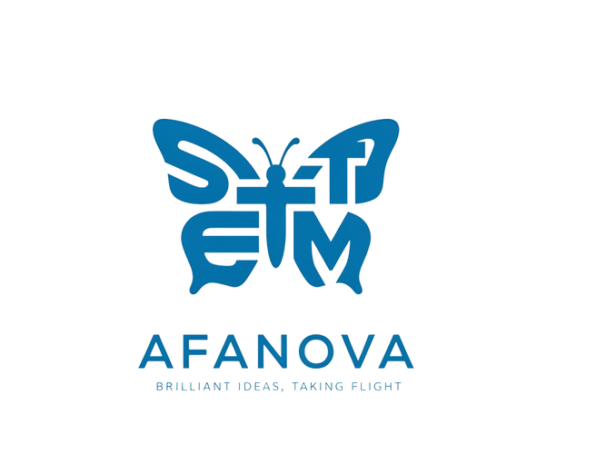
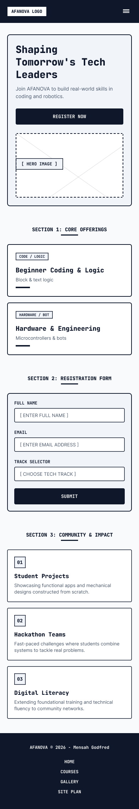
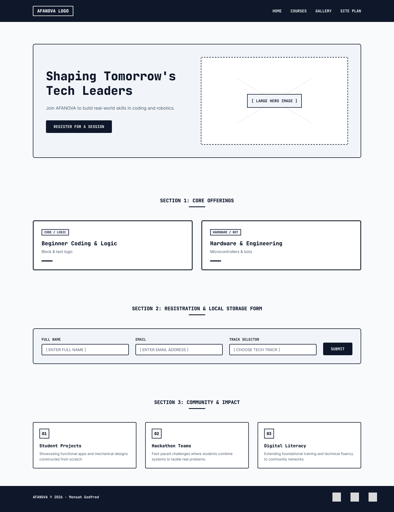

Site Name
AFANOVA
Reason for selection: This name represents an innovative startup focused on practical STEM, robotics, and technology education tailored for youth development.
Overview
Purpose
The purpose of our AFANOVA website is to serve as a comprehensive hub for practical STEM and robotics training, providing a one-stop platform for youth and young innovators. Our aim is to offer high-quality information, technical resources, and session registration options to individuals seeking hands-on experiences in coding and hardware engineering. This website will strive to educate, inspire, and facilitate seamless planning and enrollment for transformative technology adventures.
What the Website Will Accomplish:
- Information Hub: The website will provide in-depth details about our robotics programs, coding bootcamps, hardware skill levels, safety guidelines, and tool essentials.
- Registration and Reservations: Users will have the ability to register for upcoming introductory sessions, choose preferred learning tracks, dates, and package options, streamlining the sign-up process.
- Community Engagement: The website will foster a community of tech enthusiasts, allowing users to share their hardware creations, debugging tips, and project recommendations, creating an engaged network of like-minded builders.
- Safety and Education: We will emphasize circuit and hardware safety through informational guides and resources, ensuring users are well-informed about best practices and precautions.
- Promotion of Digital Literacy: By promoting practical STEM education and technology training, the website aims to support local youth and encourage sustainable digital transformation and technical growth.
Audience & Scenarios
Target Audience Statement:
Our target audience comprises tech enthusiasts ranging from curious beginners to young innovators, aged 10 to 25, seeking exciting and memorable experiences in robotics and software engineering. They are individuals and student groups seeking the thrill that comes with building real-world technology solutions, and they value hands-on learning, problem-solving, and creative innovation. Additionally, parents and educators looking for structured STEM training and unique educational opportunities are also within our target audience.
Key Scenario Questions:
- What beginner robotics courses are available for students with no prior programming experience?
- How can I register for an upcoming hands-on workshop session and verify my sign-up details?
Branding
Website Logo

Style Guide
Color Palette
Palette URL:
https://coolors.co/0a192f-8892b0-64ffda-ffffff| Primary | Secondary | Accent 1 | Accent 2 |
|---|---|---|---|
| #0A192F | #8892B0 | #64FFDA | #FFFFFF |
Application: Primary (#0A192F) is used for main headers, navigation background, and structural containers. Secondary (#8892B0) is used for body paragraph text and supporting descriptions. Accent 1 (#64FFDA) is used for interactive buttons, links, and high-priority call-to-actions. Accent 2 (#FFFFFF) is used for card backgrounds and high-contrast text.
Typography
Heading Font: Poppins, sans-serif (Applied to all main headings <h1>, <h2>, <h3> for a modern tech-forward presentation)
Paragraph Font: Open Sans, sans-serif (Applied to all body copy and list items for optimized readability)
Normal paragraph example
The leading practical STEM and robotics training in Ghana, AFANOVA offers hands-on learning on coding, microcontrollers, and hardware engineering in Tema. Since our founding, we have been dedicated to shaping tomorrow's tech leaders through interactive workshops and real-world project builds.
Colored paragraph example
Bootcamps vary from beginner logic tracks great for students with zero experience, to advanced hardware engineering sessions exclusively for dedicated builders. No matter what type of technical adventure you are seeking, AFANOVA can make it happen for you.
Navigation
Site Map
Wireframes
Home - Mobile View

Home - Desktop View
